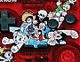

イマジニアバージョンその１。'97年に開催された、『マルチレーシングチャンピオンシップ』タイムトライアルキャンペーンの賞品。ボディカラーはエメラルドグリーン。
イマジニアバージョンその２。'97年12月から、サンリオショップにて『サンリオうらないパーティ』とセットで販売。ピンクボディにキティちゃんのイラスト付き。
(c)1976,1999 SANRIO CO.,LTD APROVAL No.T902264
イマジニアバージョンその３。ゲームボーイカラーの特別バージョンだ。'98年12月より、サンリオショップにて『フェアリーキティの開運辞典』とセットで販売。やっぱりピンク。
(c)1976,1999 SANRIO CO.,LTD APROVAL No.T902264
アトラスバージョン。'97〜'98に、芸能人やタレントなどに配布された。また、テレビなど各メディアにて、プレゼントキャンペーンも行なわれた。ボディカラーはパールブルー。
西武ライオンズバージョン。'97年から、西武ライオンズグッズ売り場での限定販売が行なわれている。ボディカラーはＬブルー。
ポケモンセンターバージョン。'98年にポケモンセンターのみでの限定販売が行なわれた。ポケモンイラスト付き。
(C)Nintendo/Creatures/GAME FREAK
ポケモンセンターバージョンのゲームボーイカラー。'99年２月20日発売開始の、ホットなアイテムだ。ポケモンセンターで販売。コロコロコミックなどでも申し込むことができる。
(C)Nintendo/Creatures/GAME FREAK

手塚治虫記念ワールドショップバージョン。クリアタイプは'98年９月から、クリアレッドタイプは同年８月から、手塚治虫ワールドショップでの販売と、ローソンのロッピーでの予約販売が行なわれている。
(C)Tezuka Productions
■ Previous page ■